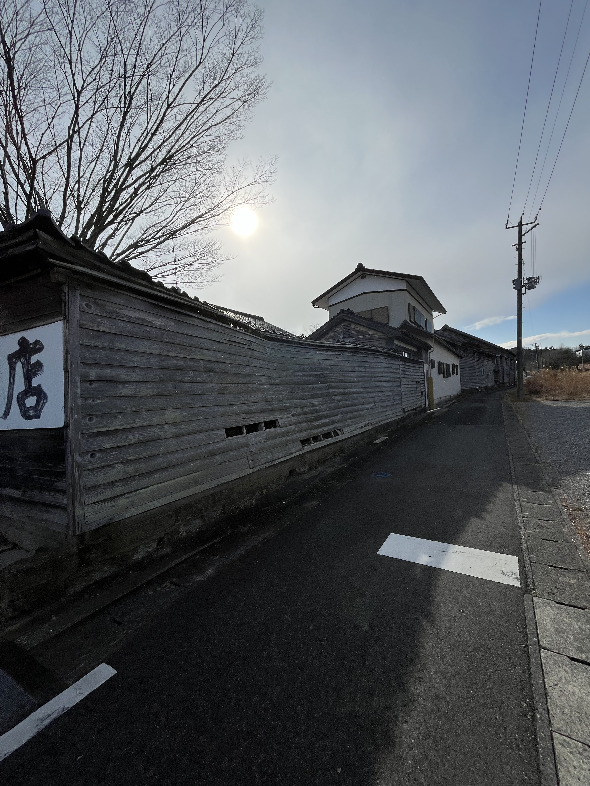
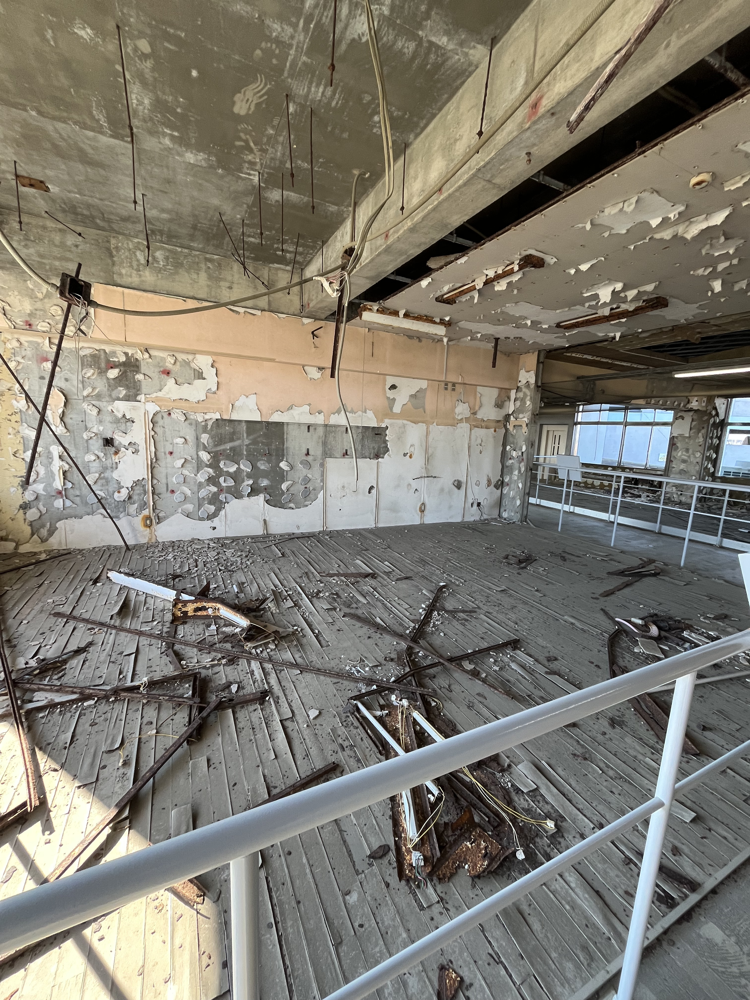
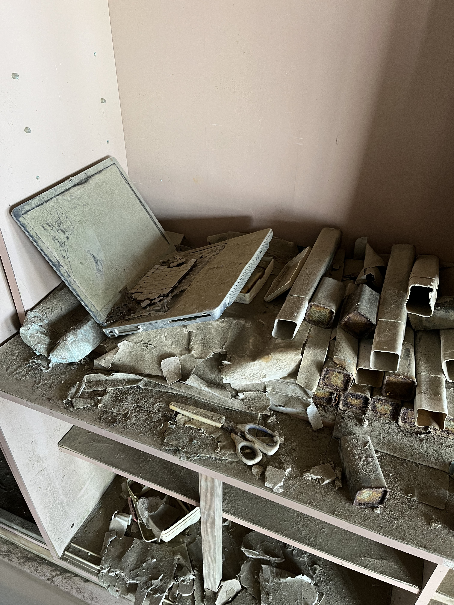
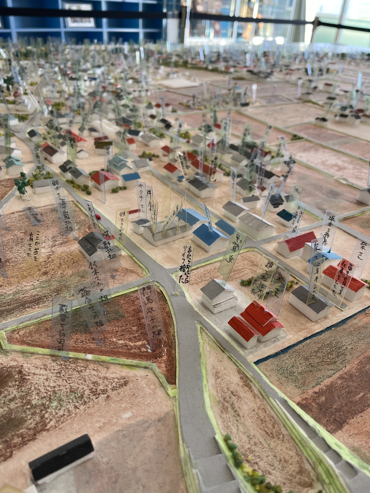
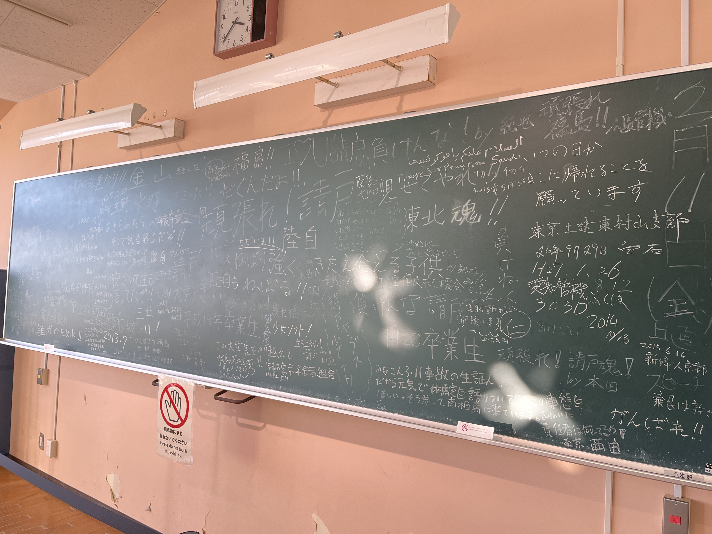

2025/02/16~18にサークル員二名が東洋大学ボランティア支援室主催の「2024年度春季 被災地のまちづくりを考え、発信するスタディツアー」に参加し、福島県へ赴きました。
双葉町には倒壊した建物が多く残されていました。震災から10年以上が経過した今でも、完全復興には至っていません。

震災遺構として公開されている浪江町立請戸小学校には、津波の悲惨さがそのまま残されていました。
 海がすぐそこに見える立地であるにも関わらず、当時学校にいた人は全員避難することができました。そこには地域の方の助けがあったそうです。
 